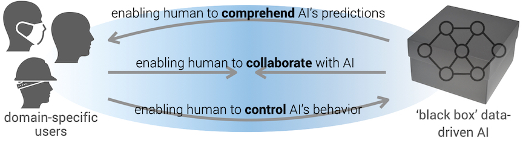

PI: Xiang 'Anthony' Chen (xac@ucla.edu), UCLA HCI Research
My research program seeks to expand the interaction bandwidth between human and AI by enabling domain-specific users to comprehend AI's predictions, to control AI's behavior, and eventually to collaborate with AI.
Hongyan Gu, Jingbin Huang, Lauren Hung, and Xiang ‘Anthony’ Chen. Lessons Learned from Designing an AI-Enabled Diagnosis Tool for Pathologists. Proc. ACM Hum.-Comput. Interact. 5, CSCW 1, Article 10 (April 2021), 25 pages.
Juan Rebanal, Jordan Combitsis, Yuqi Tang, Xiang ‘Anthony’ Chen. XAlgo: a Design Probe of Explaining Algorithms’ Internal States via Question-Answering. In Proceedings of the 26th International Conference on Intelligent User Interfaces (IUI '21), April 14--17, 2021, College Station, TX, USA.
Hongyan Gu, Yifan Xu, Mohammad Haeri Haeri, Xiang 'Anthony' Chen. CrossPath: Top-down, Cross Data Type, Multi-Criterion Histological Analysis by Shepherding Mixed AI Models. Under review.
Yao Xie, Melody Chen, David Kao, Ge Gao, and Xiang 'Anthony' Chen. CheXplain: Enabling Physicians to Explore and Understand Data-Driven, AI-Enabled Medical Imaging Analysis. In Proceedings of the 2020 CHI Conference on Human Factors in Computing Systems (CHI ’20). Association for Computing Machinery, New York, NY, USA, 1–13.